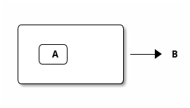
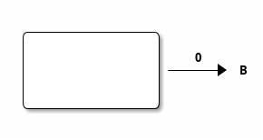
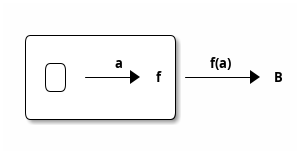
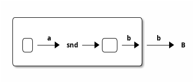

Steve Downey
These are the slides, slightly rerendered, from my presentation at C++Now 2023.
How can P2300 Senders be composed using sender adapters and sender factories to provide arbitrary program control flow?
std::executionRecent version at https://isocpp.org/files/papers/P2300R7.html
A self-contained design for a Standard C++ framework for managing asynchronous execution on generic execution resources.
Schedulers
Senders
Responsible for scheduling work on execution resources.
Execution resources are things like threads, GPUs, and so on.
Sends work to be done in a place.
Senders describe work.
Receivers are where work terminates.
Value channel
Error channel
Work can terminate in three different ways.
It's been a few minutes. Lets see some simple code.
1: 2: #include <stdexec/execution.hpp> 3: #include <exec/static_thread_pool.hpp> 4: #include <iostream> 5: 6: int main() { 7: exec::static_thread_pool pool(8); 8: 9: stdexec::scheduler auto sch = pool.get_scheduler(); 10: 11: stdexec::sender auto begin = stdexec::schedule(sch); 12: stdexec::sender auto hi = stdexec::then(begin, [] { 13: std::cout << "Hello world! Have an int.\n"; 14: return 13; 15: }); 16: 17: auto add_42 = stdexec::then(hi, [](int arg) { return arg + 42; }); 18: 19: auto [i] = stdexec::sync_wait(add_42).value(); 20: 21: std::cout << "The int is " << i << '\n'; 22: 23: return 0; 24: } 25:
Hello world! Have an int. The int is 55
1: exec::static_thread_pool pool(3); 2: 3: auto sched = pool.get_scheduler(); 4: 5: auto fun = [](int i) { return i * i; }; 6: 7: auto work = stdexec::when_all( 8: stdexec::on(sched, stdexec::just(0) | stdexec::then(fun)), 9: stdexec::on(sched, stdexec::just(1) | stdexec::then(fun)), 10: stdexec::on(sched, stdexec::just(2) | stdexec::then(fun))); 11: 12: auto [i, j, k] = stdexec::sync_wait(std::move(work)).value(); 13: 14: std::printf("%d %d %d\n", i, j, k);
Describe some work:
Creates 3 sender pipelines that are executed concurrently by passing to `when_all`
Each sender is scheduled on `sched` using `on` and starts with `just(n)` that creates a Sender that just forwards `n` to the next sender.
After `just(n)`, we chain `then(fun)` which invokes `fun` using the value provided from `just()`
Note: No work actually happens here. Everything is lazy and `work` is just an object that statically represents the work to later be executed
0 1 4
Order of execution is by chance, order of results is determined.
1: exec::static_thread_pool pool(3); 2: 3: auto sched = pool.get_scheduler(); 4: 5: auto fun = [](int i) -> stdexec::sender auto { 6: using namespace std::string_literals; 7: if ((i % 2) == 0) { 8: return stdexec::just("even"s); 9: } else { 10: return stdexec::just("odd"s); 11: } 12: }; 13: 14: auto work = stdexec::when_all( 15: stdexec::on(sched, stdexec::just(0) | stdexec::let_value(fun)), 16: stdexec::on(sched, stdexec::just(1) | stdexec::let_value(fun)), 17: stdexec::on(sched, stdexec::just(2) | stdexec::let_value(fun))); 18: 19: auto [i, j, k] = stdexec::sync_wait(std::move(work)).value(); 20: 21: std::printf("%s %s %s", i.c_str(), j.c_str(), k.c_str());
The minimal set being:
I will mostly ignore the error and stop channels
Continuation Passing Style
Where to go next rather than return the value.
add :: Float -> Float -> Float add a b = a + b add_cps :: Float -> Float -> (Float -> a) -> a add_cps a b cont = cont (a + b)
auto add(float a, float b) -> float { return a + b; } template<typename Cont> auto add_cps(float a, float b, Cont k) { return k(a+b); }
In continuation passing style we never return.
We send a value to the rest of the program.
Hard to express in C++.
Extra machinery necessary to do the plumbing.
Also, some risk, so we don't always do TCO.
We keep the sender "thunks" live so we don't dangle references.
The transformations of direct functions to CPS are mechanical.
The result is easier to optimize and mechanically reason about.
Equivalent to Single Static Assignment.
Structured Programming can be converted to CPS.
General continuations reified as a function.
Everyone knows that when a process executes a system call like ‘read’, it gets suspended. When the disk delivers the data, the process is resumed. That suspension of a process is its continuation. It is delimited: it is not the check-point of the whole OS, it is the check-point of a process only, from the invocation of main() up to the point main() returns. Normally these suspensions are resumed only once, but can be zero times (exit) or twice (fork).
Oleg Kiselyov Fest2008-talk-notes.pdf
If this qoute reminds you of coroutines, you are paying attention.
newtype Cont r a = Cont { runCont :: (a -> r) -> r }
This is roughly equivalent to the sender value channel. A Cont takes a reciever, a function that consumes the value being sent, and produces an r, the result type.
The identity function is often used.
std::execution
The plumbing is hidden.
Senders "send" to their continuations, delimted by the Reciever.
Adds two more.
At least
Transform a function
$latex A \rightarrow B $
to
$latex A \rightarrow B \rightarrow ( B \rightarrow R ) \rightarrow R $
add :: Float -> Float -> Float add a b = a + b add_cps :: Float -> Float -> (Float -> A) -> A add_cps a b cont = cont (a + b)
$latex B \rightarrow ( B \rightarrow R ) \rightarrow R $
The $LATEX A$ is (mostly) erased from the Sender.
$latex ( B \rightarrow R ) \rightarrow R $

juststdexec::just(0)

thenauto f(A a) -> B; auto s = stdexec::just(a) | stdexec::then(f);

let_valuesender_of<set_value_t(B)> auto snd(A a); auto s = stdexec::just(a) | stdexec::let_value(snd);

(surprise)
(shock, dismay)
Functions are units of work.
We compose them into programs.
The question is if the rules apply.
$latex M \langle a \rangle \rightarrow (a \rightarrow M \langle b \rangle ) \rightarrow M \langle b \rangle $
$latex (a \rightarrow M \langle b \rangle ) \rightarrow (b \rightarrow M \langle c \rangle ) \rightarrow (a \rightarrow M \langle c \rangle ) $
$latex M \langle M \langle a \rangle \rangle \rightarrow M \langle a \rangle $
Monad Interface
$latex a \rightarrow M \langle a \rangle $
$latex (a \rightarrow b) \rightarrow M \langle a \rangle \rightarrow M \langle b \rangle $
Any one of the first three and one of the second two can define the other three
Monad Interface
Monad Laws
Stacked up.
The three channels can be crossed, mixed, and remixed. Focus on the value channel for simplicity.
justSend a value.
pure
just lifts a value into the monad
thenSend a value returned from a function that takes its argument from a Sender.
fmap or transform
then is the functor fmap
let_valueSend what is returned by a Sender returned from a function that takes its argument from a Sender.
bind
let value is the monadic bind
The monadic bind gives us the runtime choices we need.
1: stdexec::sender auto work = 2: stdexec::schedule(sch) 3: | stdexec::then([] { 4: std::cout << "Hello world! Have an int."; 5: return 13; 6: }) 7: | stdexec::then([](int arg) { return arg + 42; }); 8: 9: auto [i] = stdexec::sync_wait(work).value(); 10:
One thing after another.
1: exec::static_thread_pool pool(8); 2: 3: stdexec::scheduler auto sch = pool.get_scheduler(); 4: 5: stdexec::sender auto begin = stdexec::schedule(sch); 6: stdexec::sender auto seven = stdexec::just(7); 7: stdexec::sender auto eleven = stdexec::just(11); 8: 9: stdexec::sender auto branch = 10: begin 11: | stdexec::then([]() { return std::make_tuple(5, 4); }) 12: | stdexec::let_value( 13: [=](auto tpl) { 14: auto const& [i, j] = tpl; 15: 16: return tst((i > j), 17: seven | stdexec::then([&](int k) noexcept { 18: std::cout << "true branch " << k << '\n'; 19: }), 20: eleven | stdexec::then([&](int k) noexcept { 21: std::cout << "false branch " << k << '\n'; 22: })); 23: }); 24: 25: stdexec::sync_wait(std::move(branch));
true branch 7
Control what sender is sent at rentime depending on the state of the program when the work is executing rather than in the structure of the senders.
tst function1: inline auto tst = [](bool cond, 2: stdexec::sender auto left, 3: stdexec::sender auto right) 4: -> exec::variant_sender<decltype(left), 5: decltype(right)> { 6: if (cond) 7: return left; 8: else 9: return right; 10: }; 11:
1: 2: using any_int_sender = 3: any_sender_of<stdexec::set_value_t(int), 4: stdexec::set_stopped_t(), 5: stdexec::set_error_t(std::exception_ptr)>; 6: 7: auto fac(int n) -> any_int_sender { 8: std::cout << "factorial of " << n << "\n"; 9: if (n == 0) 10: return stdexec::just(1); 11: 12: return stdexec::just(n - 1) 13: | stdexec::let_value([](int k) { return fac(k); }) 14: | stdexec::then([n](int k) { return k * n; }); 15: } 16:
1: 2: int k = 10; 3: stdexec::sender auto factorial = 4: begin 5: | stdexec::then([=]() { return k; }) 6: | stdexec::let_value([](int k) { return fac(k); }); 7: 8: std::cout << "factorial built\n\n"; 9: 10: auto [i] = stdexec::sync_wait(std::move(factorial)).value(); 11: std::cout << "factorial " << k << " = " << i << '\n'; 12:
factorial built factorial of 10 factorial of 9 factorial of 8 factorial of 7 factorial of 6 factorial of 5 factorial of 4 factorial of 3 factorial of 2 factorial of 1 factorial of 0 factorial 10 = 3628800
1: auto fib(int n) -> any_int_sender { 2: if (n == 0) 3: return stdexec::on(getDefaultScheduler(), stdexec::just(0)); 4: 5: if (n == 1) 6: return stdexec::on(getDefaultScheduler(), stdexec::just(1)); 7: 8: auto work = stdexec::when_all( 9: stdexec::on(getDefaultScheduler(), stdexec::just(n - 1)) | 10: stdexec::let_value([](int k) { return fib(k); }), 11: stdexec::on(getDefaultScheduler(), stdexec::just(n - 2)) | 12: stdexec::let_value([](int k) { return fib(k); })) | 13: stdexec::then([](auto i, auto j) { return i + j; }); 14: 15: return work; 16: } 17:
1: 2: int k = 30; 3: stdexec::sender auto fibonacci = 4: begin | stdexec::then([=]() { return k; }) | 5: stdexec::let_value([](int k) { return fib(k); }); 6: 7: std::cout << "fibonacci built\n"; 8: 9: auto [i] = stdexec::sync_wait(std::move(fibonacci)).value(); 10: std::cout << "fibonacci " << k << " = " << i << '\n';
fibonacci built fibonacci 30 = 832040 fibonacci 30 = 832040
1: 2: if (first == last) { 3: return stdexec::just(U{std::move(init)}); 4: } 5: 6: auto nxt = 7: stdexec::just(std::invoke(f, std::move(init), *first)) | 8: stdexec::let_value([this, 9: first = first, 10: last = last, 11: f = f 12: ](U u) { 13: I i = first; 14: return (*this)(++i, last, u, f); 15: }); 16: return std::move(nxt);
1: 2: auto v = std::ranges::iota_view{1, 10'000}; 3: 4: stdexec::sender auto work = 5: begin 6: | stdexec::let_value([i = std::ranges::begin(v), 7: s = std::ranges::end(v)]() { 8: return fold_left(i, s, 0, [](int i, int j) { return i + j; }); 9: }); 10: 11: auto [i] = stdexec::sync_wait(std::move(work)).value(); 12:
work = 49995000
using any_node_sender = any_sender_of<stdexec::set_value_t(tree::NodePtr<int>), stdexec::set_stopped_t(), stdexec::set_error_t(std::exception_ptr)>; auto search_tree(auto test, tree::NodePtr<int> tree, stdexec::scheduler auto sch, any_node_sender&& fail) -> any_node_sender { if (tree == nullptr) { return std::move(fail); } if (test(tree)) { return stdexec::just(tree); } return stdexec::on(sch, stdexec::just()) | stdexec::let_value([=, fail = std::move(fail)]() mutable { return search_tree( test, tree->left(), sch, stdexec::on(sch, stdexec::just()) | stdexec::let_value( [=, fail = std::move(fail)]() mutable { return search_tree( test, tree->right(), sch, std::move(fail)); })); }); return fail; }
tree::NodePtr<int> t; for (auto i : std::ranges::views::iota(1, 10'000)) { tree::Tree<int>::insert(i, t); } auto test = [](tree::NodePtr<int> t) -> bool { return t ? t->data() == 500 : false; }; auto fail = begin | stdexec::then([]() { return tree::NodePtr<int>{}; }); stdexec::sender auto work = begin | stdexec::let_value([=]() { return search_tree(test, t, sch, std::move(fail)); }); auto [n] = stdexec::sync_wait(std::move(work)).value(); std::cout << "work " << " = " << n->data() << '\n';
work = 500